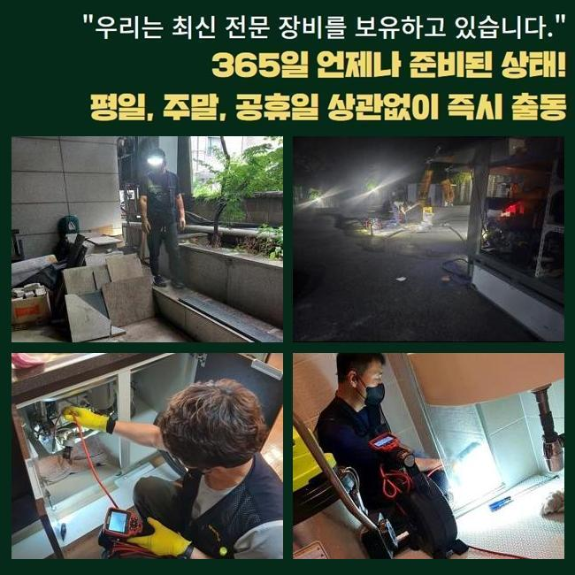
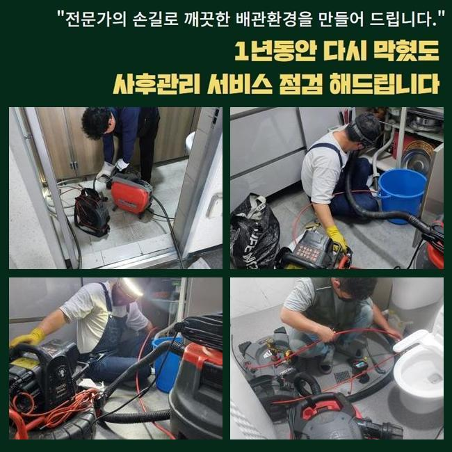
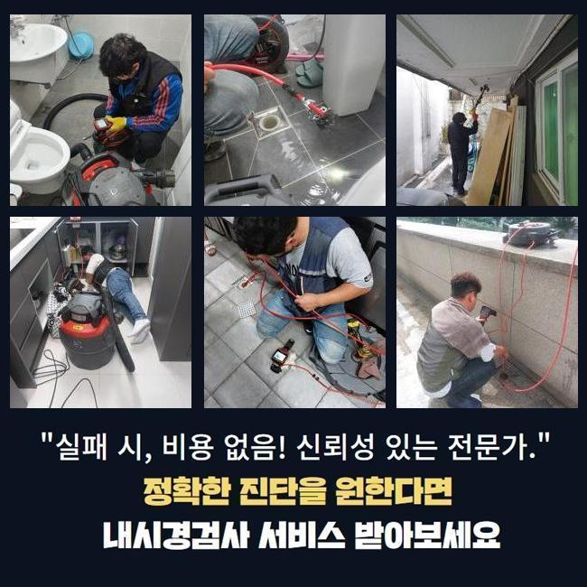
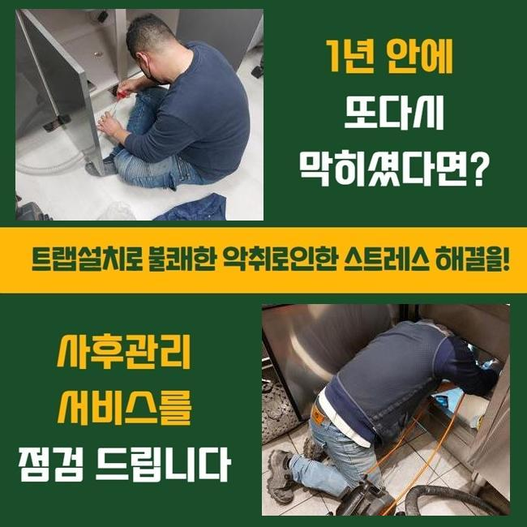
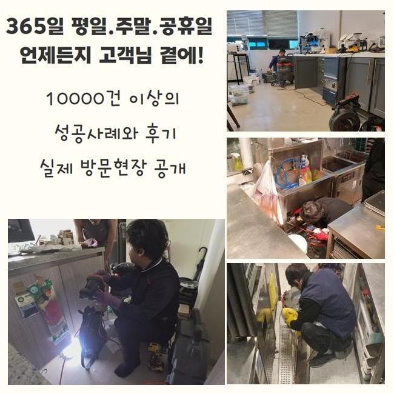
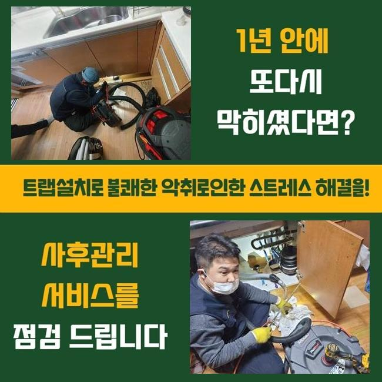

🏠 성남 복정동세탁기배수구막힘 신흥동 하수구청소장비 배관전문
성남 하수구막힘 전문 시공 후기

📋 작업 개요
- 위치: 성남
- 서비스 유형: 하수구막힘, 배관막힘, 역류해결, 뚫는업체, 배관청소, 고압세척, 배관보수
- 작업 일시: 2025. 2. 11. 13:11
- 업체명: 하수구수사대 (010-5615-2118)
🔍 문제 상황
성남 복정동세탁기배수구막힘 신흥동 하수구청소장비 배관전문
상업적인 건물 내부에서 하수가 막히다못해 넘치는 현상이 나타났다는 것을 듣고 깔끔하게 보수를 해드리려고 작업지로 향했습니다
여러 세대가 모인 건물이면 내부 장소마다 설치된 배수로가 메인줄기에서 만나는 모습을 갖추고 있는 설치장소들이 대다수입니다
일부 배수로 안에서 결함이 탄생했다고 해도 연쇄적으로 다른 배관을 막아서 여러 사람들이 불편함을 감당해야 할 수 있습니다
이번에 수선을 해드렸던 건물은 여러 장소들이 모인 상가건물이었는데 불현듯 찾아온 하수구 곤란으로 가게 오픈을 못하다 보니 경제적인 손실까지도 건물 자체에 비상이 걸렸다고 해요
건물 내에서 하수설비에 대한 고장이 하루가 멀다하고 나타나면 건물 이용자들에게 심각한 고충을 선사할 수 있는 사안이니 의뢰받는 즉시로 설치된 하수구로 향합니다
건물에 도착하면 피해 정도가 두드러지는 곳부터 우선 방문하여 물이 내려가는지 확인해보는데요
수돗물의 배수테스트의 의의는 물을 양동이에 받거나 세게 튼 다음 배수구 구멍으로 쏟아부은 물이 나가는 스피드를 추산하여 문제의 심각도를 추론합니다
아래로 향하는 물의 유속이 슬로우모션이 걸린 듯 느렸으며 중간중간 흐름의 끊김이 나타난다는 것을 직접 관측할 수 있었는데요
여러 장소에서 하수도의 불통이 일어난 것은 관로 내면에 생각보다 많은 노폐물들이 끼어있을 확률이 매우 유력합니다

🔎 원인 분석
💡 전문가 진단: 정밀 진단 장비를 사용하여 슬러지의 고착 여부를 판명하고 타격/세척 작업을 실시했습니다.
덩어리화가 된 찌꺼기들을 싹 소강시키지 못할 경우에는 근방의 배관들까지 오염이 옮겨져 갈 위험이 있으니 과정 간의 텀을 줄였습니다
하수구 막힘을 만드는 주요인은 물이 나가는 통로를 메꿔버린 오물일 때가 많으니 전부 확인해서 청소를 해나가야 말끔해집니다
생활 중에 물을 쓰다보면 액체에 함유된 성분들이 있는데 배수구 구멍을 통해서 폐기가 되는 과정에서 일정한 섹션에 쌓이게돼서 통수를 저해하게 됩니다
의도적으로 고형화된 물질들을 흘려보내는 것 이외에도 중금속이나 석회 성분 그리고 물의 미네랄이 조금씩 말라붙습니다
관로 안을 살펴보니까 털이나 섬유조직과 흙 등등 견고한 성질의 물에 안 녹는 것들이 축적된 것이 분명했습니다
얽히고 꼬이다가 끌어당기는 힘까지 생긴다면 처치곤란의 방해물이 돼요
통로를 꽉 채운다면 깊숙한 곳에서 부패된 물의 역류도 피할 길이 없을 힘든 케이스로 진행될 수 있습니다
이물질은 물과 닿으면 위생적으로도 빠르게 나빠질만한 경우가 상당히 많고 부패과정에서 유발되는 쿰쿰한 냄새가 떠다녀서 생활이 더욱 까다로워집니다
수분과 가까이하는 관로 특성상 관로는 습기가 자욱하므로 이물질의 부패도 스피드있고 악취까지 곳곳에 배이게 됩니다
노폐물이 누적된 위치들이 다수의 공간일 수 있다보니 총 문제점들을 발본색원해줘야 합니다
하나의 막힘이라면 습식청소기의 단순 운용으로 물이 소통되게 할 수 있어요

🔧 작업 과정
배관 자체가 독특한 형상이거나 연결 구간이 많다보면 막힘이 일어나는 포인트들이 많이 생성되어 있을 수 있습니다
그러므로 작업 전에는 관로 모양과 오물의 크기와 범위를 사전 조사를 해줘야 합니다
아무리 물을 쏘아대더라도 통수가 다시 나오지 않으면 오물이 너무 커졌다거나 딱딱하게 말라붙었을 가능성이 커요
이와 같은 쉽지않은 하수도 막힘을 부드럽게 연화시키려면 본질적인 원인을 발견하여 탈거해주고 정리정돈해야 합니다
방해물의 강직도와 같은 실황을 파악해야만 원활한 작업 흐름을 그릴 수 있습니다
관측을 위해 넣는 내시경은 깊고 어둑해서 안보이는 배관을 수수께끼였던 관로 상태를 확인하게 해주는 도구로써 찌꺼기가 붙은 지역과 해당 침전물의 정보에 대해 판단할 수 있도록 보조합니다
카메라를 중간중간 주입해서 현재진행도를 살펴보면 또다른 장애는 없는지 중간 체크를 해주기 때문에 작업의 완성도가 높아집니다
문제가 빚어진 배관 안의 상태를 가볍게 확인할 때와 마감 때에 시공의 결과를 더블체크 해주기 위한 수단으로 활용하고 있습니다
내시경을 이리저리 옮겨가며 확인하니 메인관로를 포함하여 인근의 섹션까지 오염원이 정체를 빚고 있음을 통수검사로써 직접 목도하게 됐습니다
실내는 진동의 힘을 갖고 있는 스프링 장비나 회전력 좋은 샤프트로 오물을 자잘하게 절단시켜서 문제를 풀어나갈 수도 있는데요
하지만 더욱 깊은 옥외 시설물의 길게 펼쳐진 영역에 이물들이 누적된 상황이면 중소형 장비로는 효과를 보기는 다소 힘들 수 있습니다
광활한 배수로이므로 달라붙은 쌓이는 양도 많을 수 밖에 없으니 석션의 집수통에 모아서는 수습자체도 정말 힘들 것입니다
사이즈와 규격이 큰 편이라면 강력한 파워를 지닌 고압세척기로 진행하는 것도 또 하나의 방법입니다
여러 장소에 접목할 수 있으며 들어가기 쉬운 크기의 노즐을 끼운 채 물을 쏘게 되는 식으로 진행되는데 석회화가 된 고형물이라도 분해를 해줍니다
공간에 있는 배관들은 생각보다 강하지 못해서 작업의 올바른 방식에 대해 철저히 수행합니다
모든 하수구 청소에 들어가기 전 관로가 얼마나 견고한지에 대해서도 사전검진을 충분히 거친 후에 하수구 뚫음과 청소를 책임집니다
적절한 강도로 분사하면서 거듭 배관의 세척을 임하면서 통수장애를 만들 정도로 배관 속을 위협하던 오물을 말끔히 제거하는 데 성공했습니다


✅ 작업 완료
마무리 단계로 모든 이물이 다 사라졌는지 다시금 검토하면 본연의 하수구 기능을 회복시키는 모든 단계가 끝납니다
물이 시원스럽게 나가는지 통수 검사도 눈앞에서 해드리고 그밖의 의문점이 있다면 친절히 답해드리고 사용법도 알려드립니다
겉면에 찌꺼기가 없는지 확인하고 배수기능이 원복 됐는지 더블체크를 놓치지 않습니다
많은 탁월한 장치의 힘으로 하자가 발생하지 않도록 하수관의 고장에 대해서 부드럽게 풀어나갑니다
고객님 댁의 하수에 대해서 궁금한 점이 있으시더라도 늦은 시간이라도 전화주세요




⚠️ 하수구 배관 막힘 예방 및 관리 가이드
- ✅ 머리카락, 비닐, 물티슈 등 물에 분해되지 않는 이물질은 하수구 유입을 절대 금지해 주세요.
- ✅ 하수구 거름망을 씌우고 모여진 이물질은 주기적으로 쓰레기통에 바로 비워주셔야 합니다.
- ✅ 배관 노후가 심할 경우 이물질이 더 쉽게 걸리므로 주기적인 배관 세척(고압세척 등)을 권장합니다.
- ✅ 작업 후 1년 이내 재발 시 하수구수사대에서 무상 A/S 보증 서비스를 제공합니다.
💡 핵심 정리
- 확실한 장비 작업(내시경 점검 및 샤프트 스케일링)으로 원인을 뿌리 뽑습니다.
- 작업 후 1년 이내에 동일한 부위 재발 시 100% 무상 A/S 서비스를 보장합니다.
- 서울 · 경기 · 인천 전 지역에 24시간 언제든 긴급 출동할 수 있도록 항시 대기 중입니다.
❓ 자주 묻는 질문 (FAQ)
🚨 성남 하수구막힘 문제로 고민이신가요?
정확한 원인 진단과 확실한 시공으로 재발 없는 해결을 약속드립니다.
24시간 긴급 출동 | 서울 · 경기 · 인천 전지역 | 1년 내 재발 시 무상 A/S